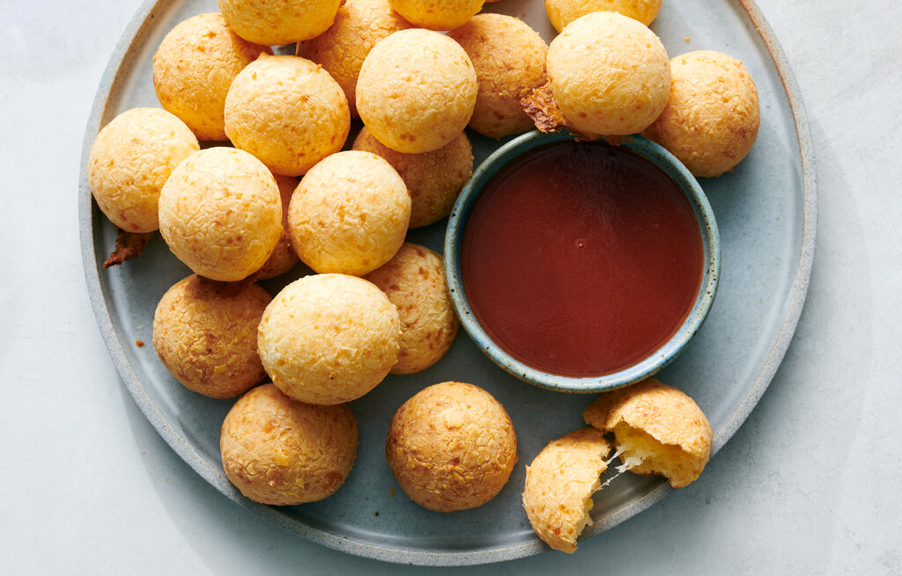

BRAZIL |
gastronomía |
|
La feijoada es un plato tradicional de Brasil, considerado por muchos como uno de los más representativos del país. Es un guiso contundente y sabroso preparado principalmente con frijoles negros y diversas partes de cerdo (como chorizo, costillas y, a veces, pies de cerdo), junto con carne de res. |
necesitas 500 g de frijoles negros, 200 g de tocino, 300 g de carne seca, 2 chorizos, 1 oreja de cerdo, 1 cola de cerdo, 1 pie de cerdo, 2 costillas de cerdo, 1 cebolla picada, 4 dientes de ajo picados, 2 hojas de laurel, sal y pimienta al gusto, y aceite de oliva |
 |
Es un guiso tradicional brasileño hecho con pescado o mariscos, cocinado en leche de coco, pimientos, cebolla, tomate y cilantro. Se sirve con arroz blanco y farofa (harina de mandioca). |
Pescado o mariscos, leche de coco, pimientos, cebolla, tomate, cilantro, aceite de dendê (aceite de palma), ajo. |
|
Es un dulce brasileño muy popular, especialmente en fiestas de cumpleaños. Son bolitas de chocolate hechas con leche condensada, cacao en polvo y mantequilla, cubiertas de granillo de chocolate. |
Leche condensada, cacao en polvo, mantequilla, granillo de chocolate. |
 |
Son croquetas en forma de lágrima, hechas de una masa de harina y caldo de pollo, rellenas de pollo desmenuzado y, a veces, queso. Se empanizan y se fríen hasta que están crujientes y doradas. |
Harina, caldo de pollo, pollo desmenuzado, queso (opcional), pan rallado, huevo, aceite para freír. |
|  |
Son unos pequeños panecillos de queso hechos con almidón de yuca (también conocido como tapioca) y queso rallado. Son ligeros y esponjosos por dentro, con una corteza ligeramente crujiente. |
Almidón de yuca, queso rallado, leche, huevos, aceite, sal. |
| Todos los derechos reservados© |
|
|